I miei valori
Sicurezza alimentare, impatto ambientale e qualita' del prodotto.
Sono alla continua ricerca di soluzioni per limitare l’impatto ambientale.
Ho deciso di rimpicciolire la grandezza dell’etichetta per evitare sprechi di carta, inserendo solo poche informazioni, come il nome, lo stile e il grado alcolico. Sono inoltre indicati gli ingredienti, con lo scopo di evitare le allergie del caso e il lotto, per rendere facilmente rintracciabile il prodotto.
Inoltre, tramite un QRcode, e' possibile accedere direttamente a tutte le informazioni aggiuntive legate alla birra che si inquadra.
Ho scelto anche di utilizzare le lattine perche', a differenza delle bottiglie, possiedono dei vantaggi molto importanti a livello ecologico, logistico e qualitativo.
Infatti, nel processo di pulizia e sanificazione delle bottiglie ho notato che si spreca troppa acqua rendendo quindi meno impattante il riciclo della lattine tramite la raccolta differenziata.
Inoltre, la lattina risulta piu' leggera (13g contro i 212g della bottiglia), occupa meno spazio (1 bottiglia = 2 lattine impilate) e agevola il trasporto, diminuendo il consumo di carburante per ogni birra.
La lattina risulta anche meno sensibile alla luce (che da' un sapore di “puzzola”) e al contatto con l’ossigeno (che da' un sapore di “cartone bagnato”).
Sono comunque fiero di essere riuscito, tramite il vostro supporto, a riutilizzare 547 bottiglie!
Come viene prodotta la mia birra?
Macinatura
Dopo aver selezionato e pesato i malti necessari per la ricetta, ne
vengono frantumati i chicchi (le cariossidi), facilitando cosi' l'estrazione
dei glucidi. Contemporaneamente, si rompe la cuticola (la parte esterna del chicco) che
contribuira' al filtraggio del mosto.
Ammostamento
Si forma una miscela di acqua e malto. Quest'ultima verra' portata a determinati livelli di
temperatura, attivando cosi' i vari enzimi che caratterizzano la birra: schiuma, dolcezza,
sensazione piu' o meno forte di alcool, corposita' ed esaltazione dei sapori maltati.
Filtrazione
Il mosto torbido viene messo in un recipiente che ha alla base una piastra filtrante in acciaio.
Dal fondo esce un mosto filtrato ma non ancora "pulito": sara' infatti necessario ripetere il processo piu'
volte rabboccando continuamente il contenitore con il mosto, fino a quando uscira' un composto limpido
(questo procedimento si chiama rimontaggio). Man mano che il mosto limpido viene estratto, e' messo da parte.
Contemporaneamente, il malto "esausto" (trebbie) viene tenuto sommerso aggiungendo acqua calda da sopra (sparging).
Bollitura
Il mosto limpido viene fatto bollire per un tempo compreso tra 60 e 90 minuti. Durante questa fase,
in specifici momenti della bollitura vengono aggiunti due "tipi" di luppoli, da amaro e d'aroma, ed eventuali spezie.
Whirpool
Formando un vortice all'interno del recipiente, si separa la parte solida (luppolo e proteine) dal mosto.
Raffreddamento
Il mosto caldo viene raffreddato fino all'esatta temperatura, che si aggira attorno ai 18°C, mediante una serpentina.
Inoculo
In un contenitore con acqua sterilizzata vengono aggiunti uno o piu' lieviti secchi, che andranno a caratterizzare
la birra. Dopo qualche minuto, il lievito viene inoculato nel mosto.
Fermentazione
I lieviti sprigionano i loro aromi e profumi in base alla temperatura a cui sono stati esposti durante la
fermentazione che, generalmente, dura dall'una alle due settimane. Se necessario, si possono eliminare eventuali
difetti effettuando delle "pause" a particolari temperature.
Separazione del lievito
Una volta completata la fermentazione, si raffredda la birra per far si' che il lievito si depositi sul fondo e
si trasferisce poi in un altro recipiente, facendo particolare attenzione a non spostare anche il lievito depositato.
Per questa ragione, solitamente la prima parte della birra viene scartata.
Imbottigliamento
Si prepara un composto di zucchero e acqua da aggiungere alla birra per formare CO2 nella quantita' necessaria
richiesta dalla ricetta. Dopodiche', si imbottiglia.
Maturazione
Attraverso la maturazione la birra viene resa "stabile", permettendo una migliore definizione di sapori e profumi.
Questo processo ha una durata variabile a seconda del tipo di birra.